Este documento acompaña la Entrega Obligatoria N.º 2 de MediConecta, la plataforma que conecta pacientes con profesionales de la salud para gestionar turnos presenciales y por telemedicina, con cobertura de obras sociales. La consigna de esta instancia pide demostrar el sistema integrado: al menos dos procesos de negocio con mensajería asincrónica (uno con cola punto a punto y otro con tópico), al menos un servicio SOAP con su WSDL justificado como integración con un sistema legado, al menos un servicio REST justificado como integración con un partner moderno o como API de consumo externo, y transacciones declarativas en un flujo crítico de varios pasos (Cátedra de Desarrollo de Aplicaciones II, 2026a). El anexo resume esta instancia como "integración sincrónica (SOAP y REST), mensajería completa y transacciones" y exige que cada entrega sume valor verificable respecto de la anterior (Cátedra de Desarrollo de Aplicaciones II, 2026b).
Respecto de la Entrega Parcial N.º 2, MediConecta pasó de seis a diez componentes de negocio, se integró con tres sistemas externos por HTTP real (uno SOAP y dos REST), expone su propia API REST, suma un segundo proceso asincrónico con cola y convierte la confirmación de un turno en un flujo transaccional de siete pasos que cruza la base de datos, el broker y dos servicios web. La Tabla 1 vincula cada requisito con la sección donde se explica y con la prueba que lo verifica. Esta versión, revisada el 15 de noviembre, actualiza lo que cambió desde el 9 (la API pasó de HTTP Basic a JWT, la aplicación va por HTTPS y la falla de demostración se arma desde otra pantalla) y se ajusta a la extensión que pide la consigna; el detalle de patrones, seguridad y pruebas está en el informe del 16 de noviembre (docs/entrega-nucleo/).
Versión final (20 de noviembre de 2026). Esta versión describe el sistema tal como se entrega al cierre. Respecto de la del 15 de noviembre cambió lo siguiente: la falla de demostración se retiró de la aplicación y el rollback con compensación se prueba ahora con una prueba de integración que la provoca desde afuera (CompensacionIT, D-42); un reintegro que la pasarela no pudo hacer ya no queda sólo en el log, sino como reintegro pendiente que se reintenta solo o que el administrativo concilia (ADR-0024, D-06 y D-41); el número de afiliado y la historia clínica se guardan cifrados con AES-256-GCM (ADR-0022); la ficha del paciente se muestra enmascarada según el rol con un Decorator (ADR-0023); y la seguridad se endureció con PBKDF2 de 600.000 iteraciones, revocación del JWT al cerrar sesión, límite de intentos con 429, permisos por destino en el broker y Row Level Security en todas las tablas (ADR-0019 a ADR-0021). Las pruebas y sus resultados están en el documento del QA (Clase15_Grupo4_MediConecta_Testing.pdf), que es la fuente de las cifras de la Parte V.
| Requisito | Implementación | Verificación |
|---|---|---|
| Proceso asincrónico con cola punto a punto | cola.autorizaciones: autorización de prestaciones a la obra social, con consumidores en competencia (Parte III) | Prueba E4, escenarios D y G |
| Proceso asincrónico con tópico | topico.turnos con tres suscriptores durables, uno con selector (Parte III) | Prueba E4, D y H |
| Servicio SOAP con WSDL (sistema legado) | CoberturaService de la obra social, consumido con un cliente generado por wsimport (Parte II) | Prueba E4, A, C y G |
| Servicio REST (partner moderno / API externa) | Pasarela de pagos y videoconsulta como cliente; API /api/v1 propia como servidor (Parte II) | Prueba E4, B, C, H, I y N |
| Transacciones declarativas en un flujo crítico | ProcesoConfirmacionTurno.confirmar (REQUIRED) con compensación del cobro (Parte IV) | CompensacionIT (Arquillian); CP-11 y CP-93; Figura 7 |
MediConecta es un conjunto de componentes Jakarta EE 10 desplegados en WildFly 41 con el perfil standalone-full, que incluye el broker ActiveMQ Artemis (Eclipse Foundation, 2022). Están implementados los ocho componentes que propone la consigna para el dominio (usuarios, turnos, historia clínica, obras sociales, pagos, telemedicina, notificaciones y facturación) más dos de soporte: la agenda de consultas para la API y el monitoreo. Cada uno tiene una interfaz @Local, su implementación EJB y sus DAO; las integraciones con terceros quedan detrás de un gateway, de modo que ningún servicio de negocio conoce SOAP ni HTTP. La Figura 1 muestra cómo se conectan entre sí y con los sistemas externos; todas las conexiones del diagrama están implementadas.
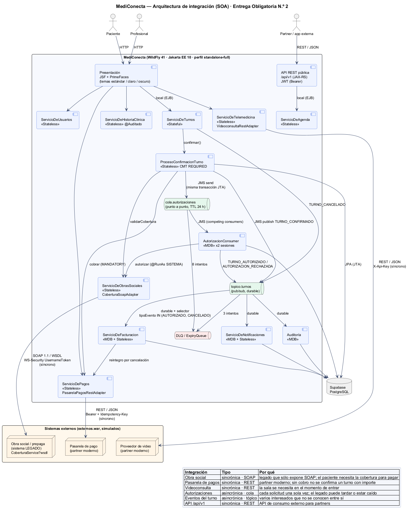
Mantenemos la regla de la entrega anterior: una integración es sincrónica cuando quien la inicia necesita la respuesta para continuar, y asincrónica cuando es una consecuencia que puede procesarse después o que le interesa a más de un componente (Hohpe y Woolf, 2003). Dentro de las sincrónicas, el protocolo lo impone el tercero: SOAP para el legado de la obra social y REST para los partners modernos. La Tabla 2 aplica la regla a cada integración, ahora todas implementadas.
| Integración | Tipo y canal | Justificación |
|---|---|---|
| Validación de cobertura | Sincrónica · SOAP | El paciente necesita saber cuánto paga antes de confirmar, y la obra social es un sistema legado que sólo expone SOAP. |
| Cobro del copago o del turno particular | Sincrónica · REST | Sin un cobro aprobado no se confirma un turno con importe; la pasarela es un servicio moderno con API REST. |
| Sala de videoconsulta | Sincrónica · REST | El profesional necesita el enlace en el momento de entrar. |
| API pública /api/v1 | Sincrónica · REST | Consumo externo por partners (cartilla y turnos del usuario). |
| Autorización de la prestación | Asincrónica · cola | Cada solicitud debe procesarse una sola vez, el legado puede tardar o estar caído y el paciente no necesita esperar la respuesta. |
| Notificaciones, auditoría y facturación | Asincrónica · tópico | Varios interesados que reaccionan al mismo evento sin conocerse; Facturación filtra con un selector. |
La validación de cobertura y la autorización son dos operaciones del mismo legado resueltas por canales distintos, y es una decisión de diseño. La primera es una consulta cuya respuesta cambia lo que el paciente paga: es sincrónica y tiene un plan alternativo si el legado no responde. La segunda es un trámite que la obra social resuelve con su auditoría médica: como mensaje en una cola, el turno se confirma igual y la autorización llega cuando el legado esté disponible, sin perderse.
Los tres sistemas externos son simuladores en un proyecto aparte (sistemas-externos/, desplegado como externos.war), pero la integración no está simulada: MediConecta habla con ellos por HTTP, con el contrato, la autenticación y las fallas que tendría un tercero. Una consola web permite ponerlos en línea, lentos o caídos en vivo.
El legado expone el servicio CoberturaService (SOAP 1.1, estilo document/literal) con dos operaciones, descriptas en la Tabla 3. Su WSDL se publica en /externos/CoberturaService?wsdl y una copia vive en el repositorio de MediConecta (src/main/resources/wsdl), porque el contrato de un tercero no lo controlamos y no queremos depender de que esté en línea para compilar. A partir de esa copia, el plugin jaxws-maven-plugin genera el cliente con wsimport en cada build. Las clases generadas nunca salen del paquete de integración: el dominio habla con la interfaz CoberturaGateway y el adaptador CoberturaSoapAdapter traduce en los dos sentidos (patrones Gateway y Adapter; Gamma et al., 1994). Si el legado cambia su contrato, se regenera el cliente y se ajusta una sola clase.
| Operación | Entrada | Salida |
|---|---|---|
| validarCobertura | obra social, plan, n.º de afiliado, código de prestación, fecha | estado (CUBIERTO, NO_CUBIERTO, AFILIADO_SUSPENDIDO…), tipo y valor de copago, si requiere autorización, n.º de transacción |
| solicitarAutorizacion | id de solicitud (clave de deduplicación), afiliado, prestación, matrícula del prestador | AUTORIZADA con código o RECHAZADA con motivo |
El legado sólo atiende a prestadores registrados: implementamos el perfil UsernameToken de WS-Security (OASIS, 2006) con handlers JAX-WS en los dos extremos. Y como un legado es el que más probabilidades tiene de fallar, el adaptador aplica cuatro patrones de resiliencia (Nygard, 2018): un timeout de 2 segundos para conectar y 3 para responder; un reintento a los 500 ms, sólo en validarCobertura porque es una consulta sin efectos; un Circuit Breaker que tras tres fallas seguidas deja de llamar al legado durante 30 segundos; y un fallback que responde con la última validación exitosa (vigencia de 24 horas) o, si no la hay, con cobertura pendiente. El Circuit Breaker es propio porque MicroProfile Fault Tolerance no está en el perfil standalone-full, que necesitamos por el broker. La Figura 2 muestra la secuencia.
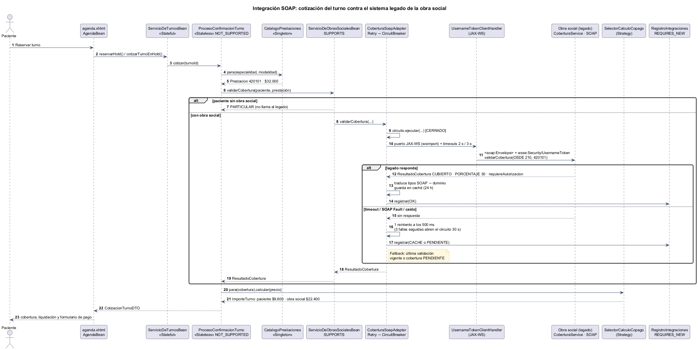
Con cobertura pendiente el turno se confirma sin cobro y la cola de autorizaciones termina de resolverlo cuando el legado vuelve (Figura A2).
MediConecta usa REST en los dos sentidos. Como cliente, consume la pasarela de pagos y el proveedor de video con el cliente estándar de JAX-RS y JSON-B, cada uno detrás de su gateway y con su propio Circuit Breaker. Con la pasarela hay dos decisiones que vale la pena justificar. La primera es el reintento seguro: cada cobro lleva un Idempotency-Key propio, así que si la respuesta se pierde y el adaptador reintenta, la pasarela devuelve el mismo pago en lugar de cobrar dos veces. La segunda es que, a diferencia de la cobertura, no hay fallback: confirmar un turno particular sin cobrarlo sería regalar la consulta, así que si la pasarela no responde el turno sigue en espera y el paciente puede reintentar. Un pago rechazado (por ejemplo, fondos insuficientes) es una respuesta válida y no abre el circuito.
Como servidor, MediConecta expone una API REST de consumo externo pensada para partners como un portal de salud o la aplicación de una obra social (Tabla 4). Los recursos son EJB sin estado, de modo que la seguridad declarativa (@RolesAllowed, @PermitAll) se aplica directamente sobre cada operación. La autenticación es con JWT: POST /api/v1/auth/login valida contra el mismo identity store de la aplicación web y devuelve un token firmado (HS256, 30 minutos) que el cliente envía como Authorization: Bearer; la API no guarda sesión. Las respuestas son objetos de transferencia armados por un ensamblador, nunca entidades, y un ExceptionMapper traduce cualquier error a un JSON uniforme sin trazas ni nombres internos.
| Operación | Acceso | Respuesta |
|---|---|---|
| GET /api/v1/profesionales | Pública | Cartilla: nombre, especialidad, matrícula. |
| GET /api/v1/profesionales/{id}/disponibilidad | Pública | Horarios libres con modalidad, código de prestación y precio. |
| GET /api/v1/turnos | Paciente o profesional | Turnos del usuario autenticado; 401 si no hay token. |
| GET /api/v1/turnos/{id} | Paciente o profesional | El turno, sólo si es del usuario; si es ajeno responde 404, igual que si no existiera. |
| POST /api/v1/turnos/{id}/cancelacion | Paciente, profesional o administrativo | El turno cancelado; 409 si su estado no admite la cancelación (patrón State). |
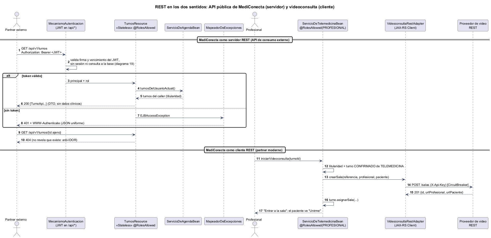
El sistema tiene ahora dos procesos de negocio asincrónicos de punta a punta, uno por cada estilo de canal, sobre el broker Artemis embebido. La Tabla 5 resume los recursos configurados (script wildfly/configurar-mensajeria.cli).
| Recurso | Configuración |
|---|---|
| topico.turnos | Eventos TURNO_CONFIRMADO, TURNO_CANCELADO, TURNO_AUTORIZADO y AUTORIZACION_RECHAZADA. Tres suscripciones durables: notificaciones, auditoria y facturacion (con selector). Tres intentos y DLQ. |
| cola.autorizaciones | Point-to-Point Channel. Mensajes persistentes con vencimiento de 24 horas. Ocho intentos con espera creciente (10, 20, 40 y luego 60 segundos), después DLQ; los vencidos van a ExpiryQueue. |
| AutorizacionConsumer | MDB con maxSession=2: dos sesiones compiten por los mensajes de la cola. |
Cuando un paciente con obra social confirma un turno, la misma transacción que lo confirma registra una solicitud de autorización y envía un mensaje a cola.autorizaciones. Del otro lado, AutorizacionConsumer lo procesa: verifica que no lo haya procesado antes (Idempotent Receiver, con la misma tabla evento_procesado de la entrega anterior), pide la autorización al legado por SOAP y, en una única transacción, marca la solicitud como resuelta, actualiza el turno y publica TURNO_AUTORIZADO o AUTORIZACION_RECHAZADA en el tópico. Consumir, actualizar y publicar ocurren juntos o no ocurren.
Si el legado no responde, el consumidor no confirma el mensaje (setRollbackOnly) y el broker lo reentrega con espera creciente; mientras el circuito está abierto los intentos fallan al instante sin colgar hilos. Cuando el legado vuelve, el siguiente intento lo resuelve. La cola tiene dos consumidores en competencia (Competing Consumers): ante un pico de confirmaciones el broker reparte los mensajes y cada uno lo procesa una sola sesión, lo que el log del servidor registra con el hilo de cada consumidor. Como un MDB no tiene un usuario que lo invoque, corre con la identidad técnica SISTEMA (@RunAs), el único rol autorizado para pedir autorizaciones al legado. La Figura 4 muestra la secuencia con el legado caído.
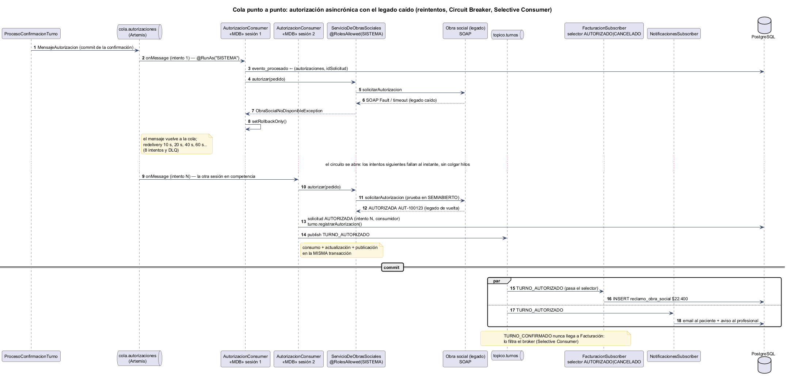
El proceso de la entrega anterior sigue funcionando y creció sin tocar al productor, que es la ventaja de un Publish-Subscribe Channel: se sumaron los dos eventos de autorización y un tercer suscriptor, Facturación. Facturación sólo necesita dos eventos, así que su suscripción usa el selector tipoEvento IN ('TURNO_AUTORIZADO','TURNO_CANCELADO') sobre una propiedad que el productor pone en la cabecera (Selective Consumer): el broker filtra el resto y esos mensajes ni siquiera llegan a su cola de suscripción. Con TURNO_AUTORIZADO genera el reclamo a la obra social por la parte que le corresponde; con TURNO_CANCELADO anula el reclamo y reintegra el pago del paciente por REST (Figura 5). El Monitor de eventos muestra, para cada evento, qué suscriptor lo procesó y con qué latencia (Figura A1 para los reclamos y reintegros).
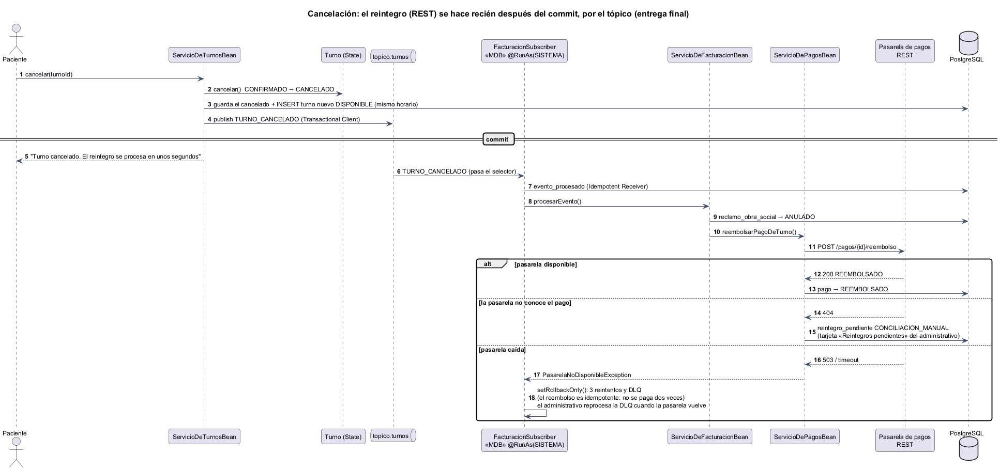
El reintegro se hace en Facturación, después del commit de la cancelación, y no dentro de la cancelación misma. Si se devolviera el dinero dentro de la transacción y la cancelación fallara después, el paciente tendría el turno y el dinero. Hacerlo al consumir el evento garantiza que sólo se reintegra una cancelación que se concretó; si la pasarela está caída, el mensaje se reintenta y el reintegro es idempotente, así que no se devuelve dos veces.
La consigna pide transacciones declarativas en un flujo crítico de varios pasos, como uno que involucre reservar, cobrar y confirmar. En MediConecta ese flujo es la confirmación del turno, implementada en ProcesoConfirmacionTurno.confirmar, un EJB sin estado con atributo REQUIRED: el contenedor abre una transacción JTA al entrar y la confirma al salir, sin una sola línea de código de demarcación (container-managed transactions). Los pasos son siete: validar la reserva con una cadena de validadores, consultar la cobertura por SOAP, calcular el copago con la estrategia de la obra social, cobrar por REST, confirmar el turno, encolar la solicitud de autorización y publicar el evento (Figura 6). El hold previo lo mantiene el bean con estado de turnos, que delega en este proceso; por eso la conversación usa NOT_SUPPORTED y la frontera transaccional queda en un solo lugar.
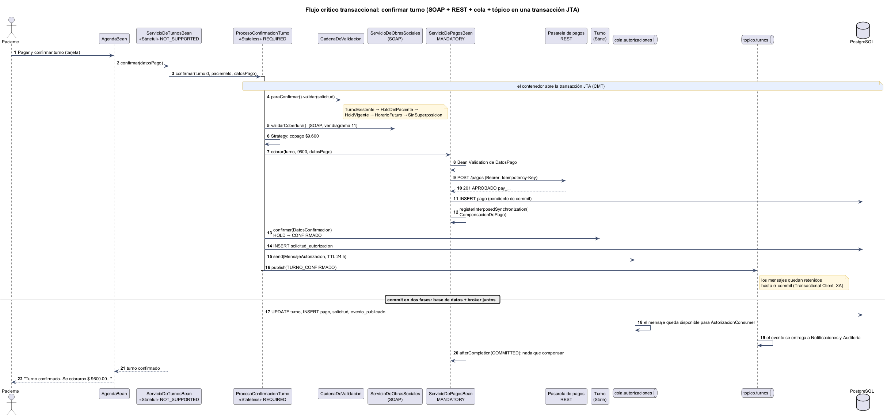
No todos los métodos que participan necesitan la misma semántica, y elegirla fue parte del diseño. La Tabla 6 resume los atributos usados y por qué.
| Atributo | Dónde | Por qué |
|---|---|---|
| REQUIRED | ProcesoConfirmacionTurno.confirmar, los MDB, la cancelación | Una operación de negocio es una transacción: todo o nada. |
| MANDATORY | ServicioDePagosBean.cobrar | Cobrar sólo tiene sentido dentro de una confirmación, porque de esa transacción depende la compensación; llamarlo sin transacción es un error y el contenedor lo rechaza. |
| SUPPORTS | validarCobertura | Consulta remota sin efectos: se une a la transacción si la hay y no abre una propia. |
| NOT_SUPPORTED | Cotización y conversación del bean con estado | No se retiene una conexión a la base mientras se espera al legado; la transacción la abre el proceso. |
| REQUIRES_NEW | RegistroIntegraciones, registro de accesos | La bitácora debe quedar aunque la operación de negocio haga rollback. |
Si cualquier paso falla, el contenedor revierte la transacción. Lo interesante es qué significa "revertir" para cada recurso, porque no todos participan de la transacción (Tabla 7). La base de datos y el broker sí: el envío JMS usa la fábrica de conexiones XA de WildFly y se enlista en la misma transacción (Transactional Client; Hohpe y Woolf, 2003), junto con el datasource (jta=true, que participa como último recurso), así que ante un rollback el turno vuelve a quedar en espera y ni la solicitud de autorización ni el evento llegan a salir. La pasarela, en cambio, es un servicio REST que no participa de la transacción: si la falla ocurre después de cobrar, el dinero ya se movió.
| Recurso | Qué pasa ante un rollback |
|---|---|
| Base de datos (turno, pago, solicitud, evento publicado) | Se revierte sola (JTA). |
| Mensajes a la cola y al tópico | No se entregan nunca (envío XA dentro de la transacción). |
| Cobro en la pasarela (REST) | Se devuelve con un reembolso compensatorio; si la pasarela no responde, queda como reintegro pendiente y se reintenta solo. |
| Consulta de cobertura (SOAP) | Es una consulta sin efectos: no hay nada que compensar. |
| Bitácora de integraciones y accesos | Queda registrada (REQUIRES_NEW). |
Para el cobro aplicamos una transacción compensatoria, la idea de las sagas (Garcia-Molina y Salem, 1987): al aprobarse el cobro, el servicio de pagos registra en la transacción en curso una Synchronization (CompensacionDePago) a través del TransactionSynchronizationRegistry. El contenedor la invoca al terminar la transacción y, si el resultado no fue un commit, pide el reembolso a la pasarela. La Figura 7 muestra la secuencia.
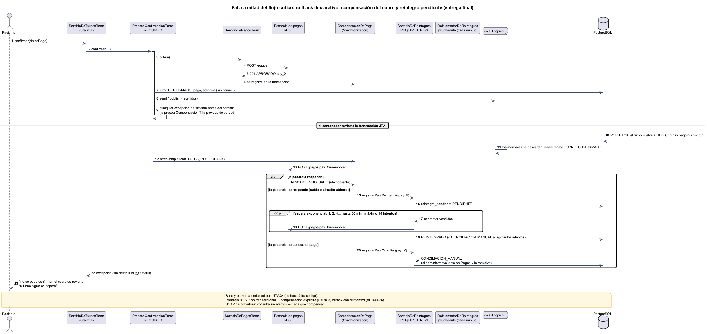
Dos detalles sostienen este comportamiento. Las reglas de negocio se lanzan como excepciones de aplicación con rollback=true, que revierten la transacción sin destruir la instancia del bean con estado, así que el paciente conserva su hold y puede reintentar; y si ocurre un error de sistema dentro del proceso, la conversación lo traduce a una excepción de aplicación por la misma razón. Como red de seguridad, un temporizador del contenedor libera cada minuto los holds vencidos, por si un reinicio del servidor dejara un turno retenido.
Si la pasarela tampoco responde al pedir el reembolso, el dinero no puede quedar retenido sin que nadie lo sepa. La compensación registra entonces un reintegro pendiente en una transacción nueva (la de la confirmación ya terminó), y un temporizador lo reintenta cada minuto con espera exponencial (1, 2, 4… hasta 60 minutos, como máximo 10 intentos). Si la pasarela responde que no conoce el pago, o se agotan los intentos, el reintegro pasa a conciliación manual y el administrativo lo ve en su pantalla de Pagos (ADR-0024). Es el patrón de bandeja de salida (outbox): la intención de devolver el dinero se guarda en la base, que sí es confiable, y se cumple cuando el externo vuelve.
En la versión del 15 de noviembre esto se verificaba con una falla de demostración que el administrativo armaba desde su pantalla. Para la versión final se retiró de la aplicación (D-42), porque una herramienta capaz de romper una confirmación no debe estar en producción. Ahora lo verifica CompensacionIT, una prueba de integración con Arquillian que corre sobre WildFly con la confirmación real y la hace fallar antes del commit desde la propia prueba: comprueba que el turno sigue en espera, que el pago no quedó en la base y que la compensación devolvió el cobro y quedó registrada; con la pasarela en modo sin reembolsos, que el reintegro quedó pendiente y se hizo al reintentar; y, si la pasarela no conoce el pago, que quedó para conciliación manual (casos CP-11 y CP-93 del documento del QA). Corre en cada push del pipeline.
Las integraciones de esta entrega se apoyan en patrones que resuelven problemas concretos: Adapter y Gateway aíslan al dominio de los contratos SOAP y REST; Circuit Breaker, Retry y Fallback evitan que la caída de un externo tumbe la plataforma; Strategy calcula el copago según la obra social; Chain of Responsibility valida la reserva; State define las transiciones del turno; y, en la mensajería, Point-to-Point con Competing Consumers, Publish-Subscribe con Durable Subscriber y Selective Consumer, Idempotent Receiver, Dead Letter Channel y Transactional Client (Gamma et al., 1994; Hohpe y Woolf, 2003). Para la versión final se sumaron el Decorator de CDI, que enmascara la ficha del paciente según quién la pide sin tocar el servicio que la arma; un AttributeConverter de JPA que cifra columnas de forma transparente; y la bandeja de salida con reintentos de los reintegros. Las Figuras A3 y A4 los muestran en diagramas de clases, y cada uno tiene su registro de decisión, con las alternativas descartadas, en docs/adr/ (24 en total).
La seguridad acompaña cada integración: JWT y @RolesAllowed en la API, con 404 para recursos ajenos; WS-Security hacia el legado; clave secreta e Idempotency-Key hacia la pasarela; la identidad técnica SISTEMA (@RunAs) para los consumidores de mensajes, que es el único rol que puede pedir autorizaciones o reintegrar pagos; y eventos sin datos clínicos. El número de tarjeta viaja a la pasarela y nunca se guarda. En la versión final se sumaron: contraseñas con PBKDF2-SHA256 de 600.000 iteraciones; revocación del JWT al cerrar sesión; límite de intentos de ingreso con 429 y bloqueo temporal; permisos por destino en el broker; Row Level Security en todas las tablas de Supabase, que cierra la API pública que el proveedor expone sobre la base; y cifrado AES-256-GCM del número de afiliado y de la historia clínica, con la clave en el almacén de credenciales de Elytron y nunca en el repositorio.
Las pruebas crecieron con el sistema y corren en cada push, en un pipeline de GitHub Actions que levanta WildFly y un PostgreSQL vacío desde cero, sin secretos del grupo. En la última corrida aprobaron 333 pruebas unitarias en 52 clases (JUnit 5), con una cobertura de 90,9 % de líneas y 86,4 % de ramas en negocio y dominio y un 78,8 % de mutantes eliminados (PIT); las pruebas de integración sobre el servidor (Arquillian, con repositorios, consumidores de mensajes y la compensación) y las de la API con REST Assured; las suites de punta a punta con navegador real; el contrato contra el WSDL y el OpenAPI; la carga con k6 (50 usuarios durante 5 minutos, p95 menor a 12 ms y 0 % de errores); y el análisis de seguridad con OWASP ZAP (0 alertas altas), Trivy, OWASP Dependency-Check y gitleaks. El plan, los 93 casos, la ejecución y los defectos están en el documento del QA, que sigue la estructura de ISO/IEC/IEEE 29119-3.
El UsernameToken viaja con la contraseña en texto (perfil PasswordText) y el HTTPS de la aplicación usa el certificado autofirmado de WildFly: en producción corresponden el perfil con resumen y un certificado emitido por una autoridad. Los tres sistemas externos son simuladores, y sus credenciales de prueba deberían vivir en el almacén de credenciales de Elytron, como ya vive la clave del cifrado. Un reintegro por cancelación con la pasarela caída sigue el camino del mensaje: tres reintentos y la cola de mensajes muertos, desde donde el administrativo lo reprocesa; unificarlo con la bandeja de reintegros pendientes es el paso siguiente. La clave del cifrado no rota sola: rotarla requiere volver a cifrar las columnas con la clave nueva. Los defectos conocidos que siguen abiertos, ninguno bloqueante ni crítico, están en la sección 5 del documento del QA.
Esta entrega cambió la naturaleza del sistema: una confirmación depende ahora de tres empresas que no controlamos, y eso nos obligó a pensar cada integración desde la falla y no desde el caso feliz. Las respuestas terminaron siendo decisiones de diseño concretas: fallback para la cobertura pero no para el cobro, la autorización por cola en lugar de esperarla, el reintegro después del commit y una compensación donde la transacción no llega. Las transacciones declarativas resuelven mucho pero no todo: el contenedor coordina la base y el broker sin una línea de demarcación, y por eso hay que saber con precisión dónde termina esa garantía, que es en el borde del primer servicio REST. La etapa final agregó una lección parecida sobre las pruebas: una herramienta de demostración dentro de la aplicación es cómoda para mostrar una falla, pero es código peligroso en producción; una prueba de integración que provoca la falla desde afuera demuestra lo mismo, corre en cada cambio y no deja nada que se pueda usar mal.
Cátedra de Desarrollo de Aplicaciones II. (2026a). Trabajo práctico integrador: Consigna general y cronograma de entregas [Material de cátedra]. Universidad Argentina de la Empresa.
Cátedra de Desarrollo de Aplicaciones II. (2026b). Anexo: Aclaraciones y requisitos complementarios al TP Integrador [Material de cátedra]. Universidad Argentina de la Empresa.
Eclipse Foundation. (2022). Jakarta EE Platform 10. https://jakarta.ee/specifications/platform/10/
Gamma, E., Helm, R., Johnson, R. y Vlissides, J. (1994). Design patterns: Elements of reusable object-oriented software. Addison-Wesley.
Garcia-Molina, H. y Salem, K. (1987). Sagas. ACM SIGMOD Record, 16(3), 249–259.
Hohpe, G. y Woolf, B. (2003). Enterprise integration patterns: Designing, building, and deploying messaging solutions. Addison-Wesley.
Nygard, M. T. (2018). Release it! Design and deploy production-ready software (2.ª ed.). Pragmatic Bookshelf.
OASIS. (2006). Web Services Security: UsernameToken profile 1.1. https://docs.oasis-open.org/wss/v1.1/
Capturas tomadas sobre la aplicación desplegada en WildFly 41 con la base real (31 de octubre y 1 de noviembre de 2026). Complementan las Partes II, III y V.
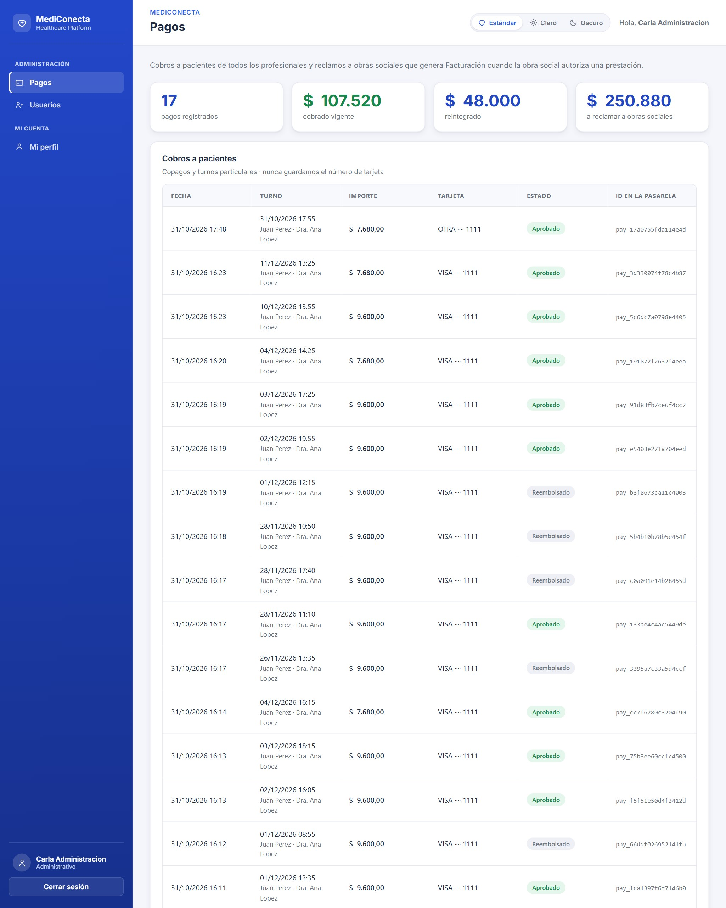
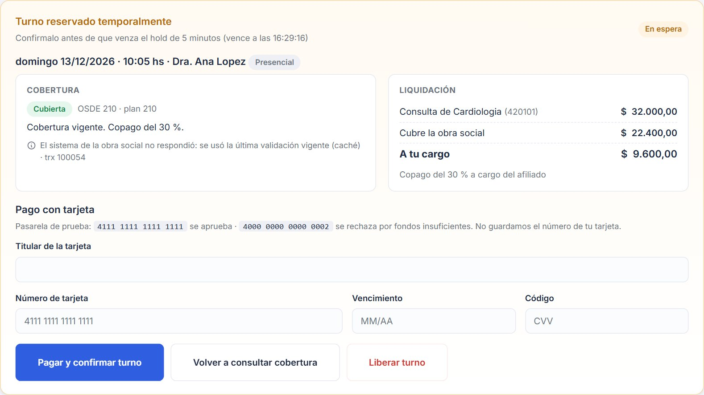
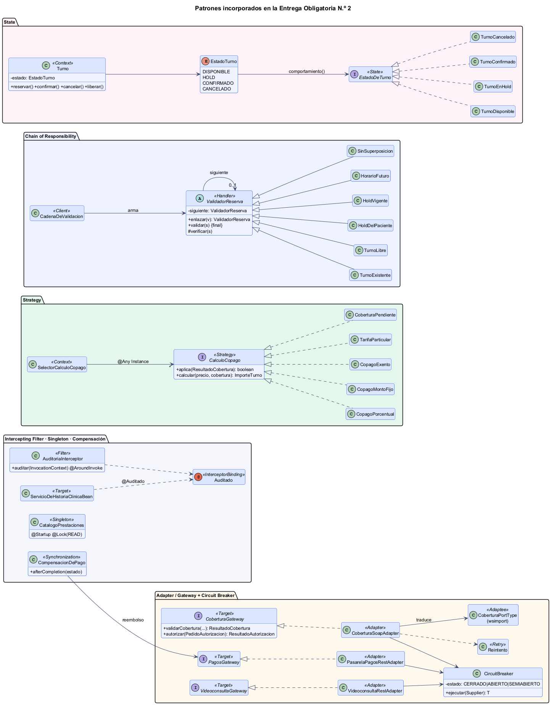
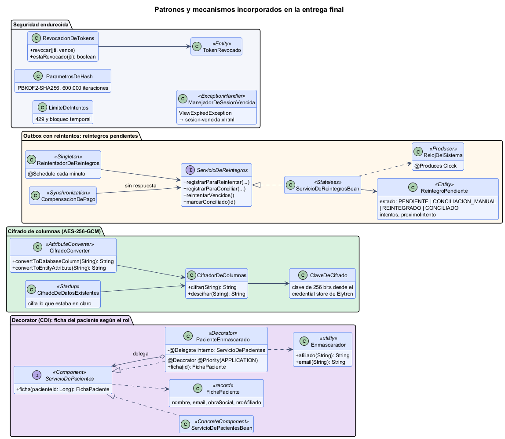
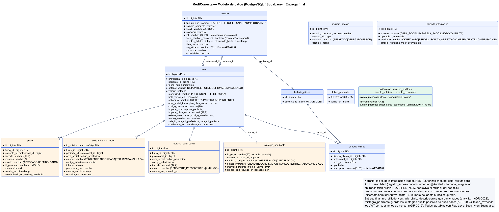
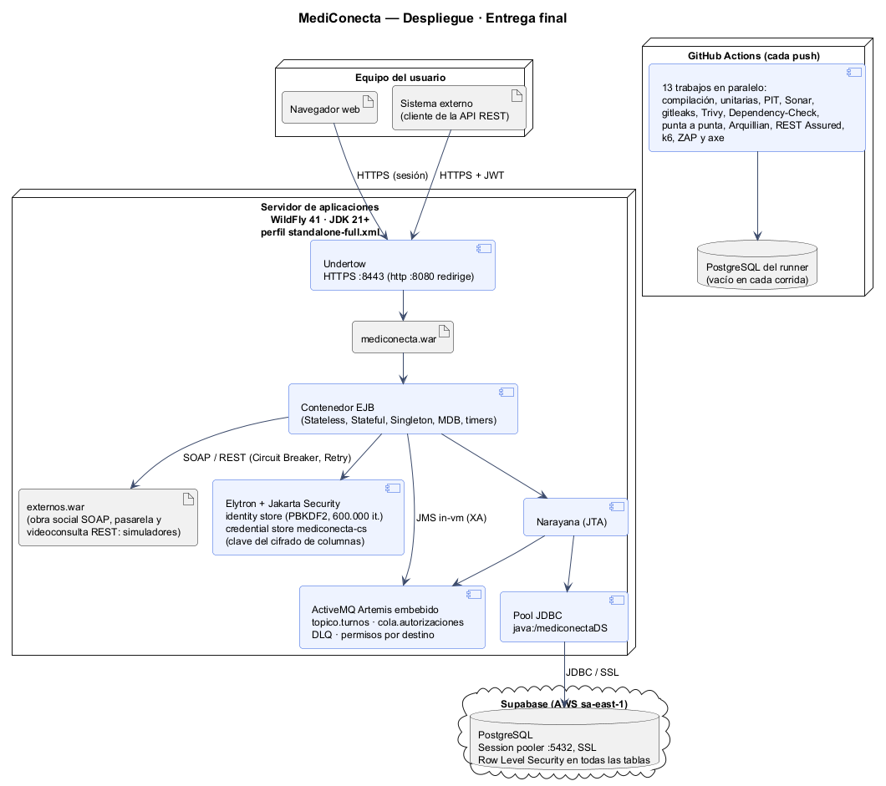
De acuerdo con la consigna del trabajo práctico (Cátedra de Desarrollo de Aplicaciones II, 2026a), declaramos que en esta entrega usamos Claude, un asistente de inteligencia artificial generativa desarrollado por Anthropic, como herramienta de productividad: para generar el código base de las integraciones SOAP y REST, de los simuladores de los sistemas externos, de la cola de autorizaciones y de los temas visuales; para configurar el broker en WildFly; para escribir las pruebas unitarias y de navegador; para generar los diagramas a partir del código; y para redactar un primer borrador de este documento. La revisión del 15 de noviembre (actualización a JWT y HTTPS, la falla de demostración y el ajuste de la extensión) también se hizo con Claude. La versión final (20 de noviembre) se hizo con Claude Code: el Decorator, el cifrado, los reintegros pendientes, las pruebas de integración y la actualización de este documento y de sus diagramas. La declaración completa de la etapa de pruebas, por herramienta, está en la sección 7 del documento del QA.
El grupo revisó el contenido contra el código y contra el comportamiento real de la aplicación, y todos los resultados informados surgen de pruebas ejecutadas sobre el sistema desplegado. Cada integrante está en condiciones de explicar y defender cualquier parte del trabajo.